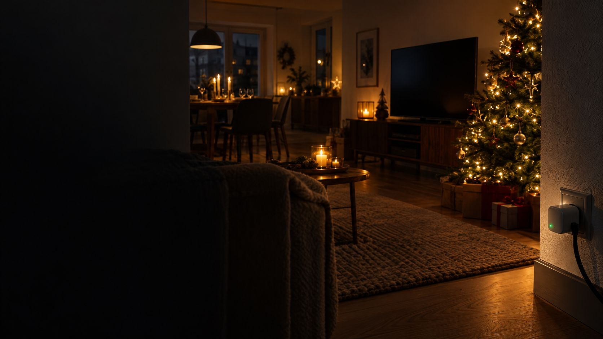

Stromkosten an Weihnachten
Lichterketten, Festbraten, Spülmaschine, Fernseher: Was die Feiertage an Strom kosten, mit Rechner für deinen Haushalt und Tipps, die nichts von der Stimmung nehmen.
An Heiligabend und den Feiertagen braucht ein Haushalt laut Wien Energie etwa doppelt so viel Strom wie an einem normalen Wintertag, bis zu 10 kWh mehr pro Tag. Größter Posten ist meist der Backofen mit 1,5 bis 2 kWh pro Stunde, eine Gans kostet so 1,40 bis 2,60 €; LED-Lichterketten fallen kaum ins Gewicht.
Was an den Feiertagen Strom braucht.
An Weihnachten sind alle zu Hause, der Ofen läuft stundenlang, die Spülmaschine öfter und der Fernseher länger. Gerechnet mit 32 ct pro kWh.
| Gerät | Verbrauch | Kosten |
|---|---|---|
| Backofen bei 200 °CFestbraten, Plätzchen (EnBW) | 1,5–2 kWh pro Stunde | 48–64 ct pro Stunde |
| Spülmaschine, Ecosparsames Gerät (Öko-Test) | 0,54 kWh pro Gang | rund 17 ct |
| Spülmaschine, Automatikdasselbe Gerät | rund 1 kWh pro Gang | rund 32 ct |
| FernseherLED 70 W, OLED 150 W (EnBW) | 0,07–0,15 kWh pro Stunde | 2–5 ct pro Stunde |
| Spielkonsole PS5beim Spielen (EnBW) | rund 0,21 kWh pro Stunde | rund 7 ct pro Stunde |
| LED-Lichterkette 5 W8 Stunden am Tag (VZ NRW) | 0,04 kWh pro Tag | gut 1 ct pro Tag |
| Glühlampen-Kette 50 W8 Stunden am Tag | 0,4 kWh pro Tag | rund 13 ct pro Tag |
| Wärmepumpentrocknerpro Ladung (Umweltbundesamt) | 0,7–1 kWh | 22–32 ct |
Der Backofen ist an Weihnachten fast immer der größte Posten: Eine Gans braucht schnell drei bis vier Stunden, das sind 4,5 bis 8 kWh allein für den Braten. Lichterketten mit LED fallen dagegen kaum ins Gewicht.
Doppelt so viel wie an einem normalen Tag.
Der Wiener Energieversorger Wien Energie hat ausgerechnet, dass ein Haushalt an Heiligabend und den beiden Feiertagen etwa doppelt so viel Strom braucht wie an einem normalen Wintertag, bis zu 10 kWh mehr pro Tag. Über drei Tage wären das bei 32 ct bis zu rund 9,60 € zusätzlich.
Das ist eine Schätzung aus Österreich und gilt für einen Durchschnittshaushalt; wer elektrisch kocht, Gäste hat und viel backt, liegt eher oben. Zum Vergleich: Zwei Personen in einer Wohnung brauchen laut Stromspiegel 2025 im ganzen Jahr rund 1.900 kWh, also gut 5 kWh am Tag. Wie dein Jahresverbrauch dasteht, zeigt der Ratgeber Stromfresser finden.
Die Feiertage machen die Jahresrechnung also nicht teuer. Teuer wird es, wenn ein alter Kühlschrank, Standby-Geräte oder ein zu hoher Tarif das ganze Jahr laufen.
Was kosten deine Feiertage?
Stell ein, was bei dir an Weihnachten läuft. Die Werte bleiben nur in deinem Browser.
So rechnen wir
Backofen 1,5 kWh pro Stunde (unterer Wert der EnBW für 200 °C), Spülmaschine Eco 0,54 kWh, Automatik 1 kWh pro Gang (Öko-Test), Fernseher 70, 100 oder 150 W und Konsole 210 W (EnBW), Lichterketten 8 Stunden am Tag. Kochfeld, Kühlschrank, Licht und Heizung sind nicht enthalten, sie laufen auch an normalen Tagen. Die Ersparnis rechnet mit Eco, Backofen ohne Vorheizen (laut Verbraucherzentrale bis 20 % weniger) und LED statt Glühlampen.
7 Tipps für sparsame Feiertage.
Keiner davon nimmt etwas von der Stimmung.
Backofen nicht vorheizen
Für Braten und Aufläufe ist Vorheizen meist überflüssig, das spart laut Verbraucherzentrale bis zu 20 Prozent. Umluft geht mit 20 bis 30 °C weniger. Mehr dazu im Ratgeber Plätzchen backen.
Ofen voll nutzen
Beilagen, Auflauf und Nachtisch nacheinander oder auf zwei Ebenen backen, solange der Ofen heiß ist, und die letzten 15 Minuten mit Restwärme garen.
Deckel und Wasserkocher
Kartoffeln und Rotkohl mit Deckel kochen, Wasser für Tee und Nudeln im Wasserkocher erhitzen. Was das spart, steht im Ratgeber Kochen mit wenig Strom.
Spülmaschine voll und Eco
Nach dem Festessen voll beladen und im Eco-Programm über Nacht laufen lassen, nicht vorspülen. Siehe Spülmaschine oder Handwäsche.
Lichterketten mit Zeitschaltuhr
LED-Ketten brauchen etwa ein Zehntel einer Glühlampen-Kette. Eine Zeitschaltuhr schaltet sie nachts ab, auch wenn alle müde ins Bett fallen. Mehr im Ratgeber Weihnachtsbeleuchtung.
Konsole ganz ausschalten
Im Ruhemodus mit Internet braucht eine Xbox Series X laut EnBW rund 13 W, eine PS5 rund 4 W, rund um die Uhr. Nach dem Spielen ganz ausschalten oder per Steckdosenleiste trennen.
Fernseher sparsamer einstellen
Den Schlafmodus nutzen, die Helligkeit an den Raum anpassen und HDR nur bei Filmen, die es brauchen. Laut EnBW kostet HDR deutlich mehr Strom.
Gute Zeit für den Strom-Check.
Zwischen Weihnachten und Neujahr ist Zeit für die Dinge, die das ganze Jahr Geld sparen: den Zählerstand notieren, die Jahresrechnung mit dem Stromspiegel vergleichen und den Tarif prüfen. Wer noch in der Grundversorgung ist, zahlt im Schnitt rund 8 ct pro kWh mehr als mit einem günstigen Tarif, bei 2.500 kWh sind das rund 210 € im Jahr.
Wie der Wechsel geht, zeigt der Ratgeber Stromtarif wechseln. Wie du mit einem Strommessgerät die Geräte findest, die übers Jahr am meisten kosten, steht unter Stromfresser finden.
Was hilft.
Die Links führen zu einer Suche bei Amazon.Anzeige
Kurz beantwortet.
Wie viel mehr Strom braucht man an Weihnachten?
Laut Wien Energie etwa doppelt so viel wie an einem normalen Wintertag, bis zu 10 kWh mehr pro Tag. Über drei Feiertage sind das bei 32 ct pro kWh bis zu rund 10 €.
Was kostet eine Weihnachtsgans im Backofen an Strom?
Ein Backofen braucht bei 200 °C laut EnBW etwa 1,5 bis 2 kWh pro Stunde. Bei drei bis vier Stunden sind das 4,5 bis 8 kWh, bei 32 ct rund 1,40 bis 2,60 €.
Was kostet eine Lichterkette über Weihnachten?
Eine LED-Kette mit 5 W kostet laut Verbraucherzentrale NRW für vier Wochen mit acht Stunden am Tag etwa 40 Cent, eine alte Glühlampen-Kette mit 50 W rund 4 €.
Wie viel Strom braucht eine PS5?
Beim Spielen laut EnBW rund 210 W, also etwa 7 ct pro Stunde bei 32 ct pro kWh. Im Ruhemodus mit Internet sind es rund 4 W, bei der Xbox Series X rund 13 W.
Lohnt es sich, an den Feiertagen Strom zu sparen?
Ein paar Euro sind drin, vor allem beim Backofen. Mehr bringt es, die freien Tage für den Tarif-Check und die Suche nach Stromfressern zu nutzen, denn die laufen das ganze Jahr.
- Wien Energie in vienna.at: So viel Strom wird an den Feiertagen in Wien verbraucht (18.12.2019) vienna.at
- futurezone: So viel mehr Strom braucht man zu Weihnachten, mit Wien Energie (24.12.2021) futurezone.at
- EnBW: Energie sparen in der Küche – clevere Stromspar-Tipps (Stand 11.09.2026) enbw.com
- EnBW: Stromverbrauch von Spielkonsolen (22.05.2025) enbw.com
- EnBW: Stromverbrauch vom Fernseher (10.09.2024) enbw.com
- Verbraucherzentrale NRW: Energiesparende Lichterketten (Stand 29.10.2026) verbraucherzentrale.nrw
- Verbraucherzentrale: Backofen – darauf sollten Sie bei Kauf und Nutzung achten verbraucherzentrale.de
- Öko-Test: Eco-Programm bei der Spülmaschine – teurer oder billiger? (14.06.2024) oekotest.de
- Umweltbundesamt: Wäschetrockner (Stand 12.03.2026) umweltbundesamt.de
- Stromspiegel 2025 (Flyer) mieterbund.de
Allgemeine Informationen ohne Gewähr. Geprüft am 11.11.2026.